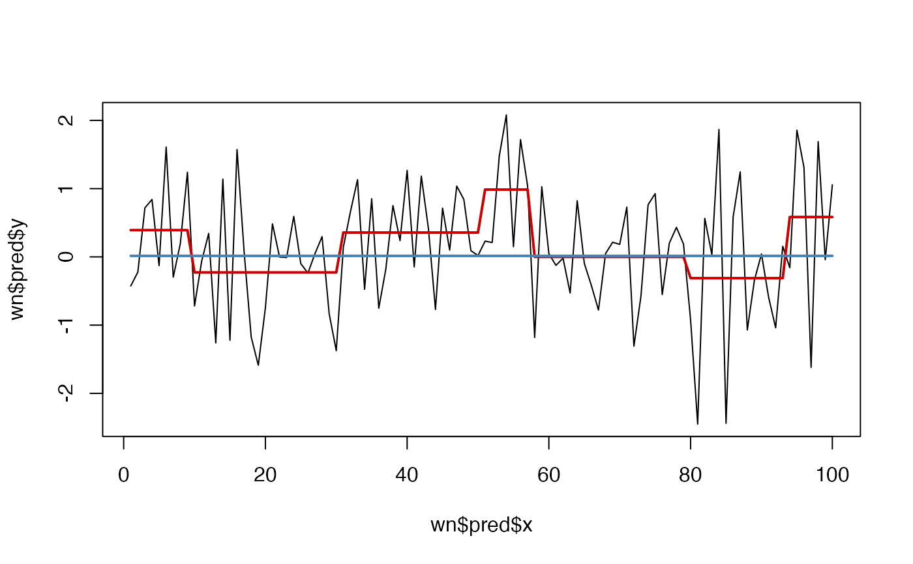

Use recursive partitioning function rpart::rpart() to perform a 'classification' of relatively stable slopes in a timeseries.
Arguments
- y
A time series of numeric vector
- minDataSplit
An integer indicating how many datapoints should be in a segment before it will be analysed for presence of a slope (default =
12)- minSlopeDuration
Minimum duration (number of datapoints) of a slope (default =
round(minDataSplit/3))- changeSensitivity
A number indicating a criterion of change that must occur before declaring the presence of a slope Higher numbers indicate higher levels of change must occur before a slope is considered. For example, if
method = "anova", the overallR^2after a slope is introduced must increase by the value ofchangeSensitivity, see thecpparameter inrpart::rpart.control(). (default =0.01)- maxSlopes
Maximum number of levels in one series (default = floor(max(NROW(y), na.rm = TRUE)/minSlopeDuration))
- method
The partitioning method to use, see the manual pages of rpart for details.
- minChange
After the call to rpart, adjust detected slope value to a minimum absolute change in
y. If a slope value is smaller thanminChange, the previous slope will be continued. Set e.g. tosd(diff(y), na.rm = TRUE). Note that this is an iterative process starting at the beginning of the series and 'correcting' towards the end. The results are stored inp_adj. Set toNAto skip, which meansp_adjwill be identical top(default =NA)- doSlopePlot
Should a plot with the original series and the levels be produced? (default =
FALSE)- doTreePlot
Should a plot of the decision tree be produced. This requires package partykit (default =
FALSE)
Value
A list object with fields tree and pred. The latter is a data frame with columns x (time), y (the variable of interest) and p the predicted slopes in y and p_adj, the slopes in p but adjusted for the value passed to minChange.
See also
Other Time series operations:
ts_center(),
ts_changeindex(),
ts_checkfix(),
ts_detrend(),
ts_diff(),
ts_discrete(),
ts_duration(),
ts_embed(),
ts_integrate(),
ts_levels(),
ts_peaks(),
ts_permtest_block(),
ts_permtest_transmat(),
ts_rasterize(),
ts_sd(),
ts_slice(),
ts_standardise(),
ts_sumorder(),
ts_symbolic(),
ts_trimfill(),
ts_windower()
Examples
# Slopes in white noise?
set.seed(4321)
y <- rnorm(100)
wn <- ts_levels(y)
#> Skipping adjustment by argument minChange...
plot(wn$pred$x,wn$pred$y, type = "l")
lines(wn$pred$p, col = "red3", lwd = 2)
# This is due to the default changeSensitivity of 0.01
wn2 <- ts_slopes(y,changeSensitivity = .1)
#> Skipping adjustment by argument minChange...
lines(wn2$pred$p, col = "steelblue", lwd = 2)
